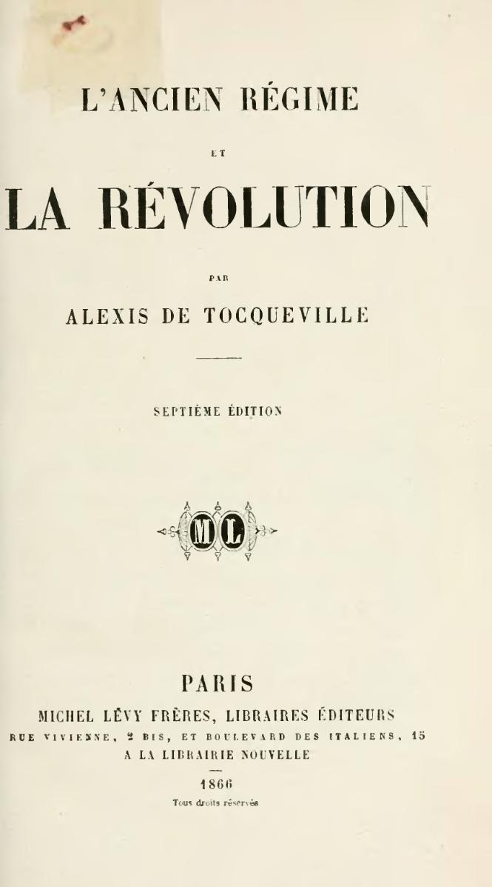

5. 五月花号，驶向民主的必然
大家好，我是杨照。
在前面一集音频节目当中跟大家提到了，托克维尔他反映在《论美国的民主》，有一种非常清楚的历史方向论。除了这样的一种史观之外，另外，《论美国的民主》写作跟出版于19世纪初期，也就反映了那个时代主流的进步史观。
世界一直在变好吗？
什么是“进步史观”呢？19世纪的欧洲之所以出现那么多奇特、突破的人类经验，很大的一部分就源自于这样的一个强烈的信念：相信人一直在进步。人类的发展、人类的历史是有方向的，从愚蠢、野蛮、盲目逐渐打开眼睛来，逐渐走向开化、文明。进步史观在19世纪再重要不过，用英文的说法是 can't be exaggerated，再怎么强调其重要性都不夸张，都不过分。
进步史观也是分别19世纪和20世纪最核心的元素。第一次世界大战之后，欧洲人不再能够相信进步史观，开始怀疑历史是否有方向，对于前途未来变得怀疑、沮丧、没有把握，那就是20世纪最重要的时代气氛了。
托克维尔也相信人会不断地进步。不过从他的眼中看来，最明显的进步指标是平等。相信人会进步这件事情，托克维尔和那个时代绝大多数的欧洲人一样；然而将进步的焦点放在平等上，却是他的独特之处。
其实他在这里提出了一项价值观：不平等是不好的，不平等是原始的，落伍的；平等才是进步的。因而，人类发展会不断地由原始、落伍的不平等状况，往进步的平等状况演进。
这正是进步史观的力量所在。
进步史观一方面是一套史观，整理历史的经验，从而推断出历史会朝哪一个方向变化的结论；但另外一方面，进步史观也是一套行动选择纲领，相信历史只会往好的、进步的方向走，于是历史朝哪一个方向演变，也就证明了那个方向是好的、是对的，也就是我们可以进而积极认可、推动的。
换句话说，托克维尔他就运用了进步史观，在书一开始的地方，对他的读者表明了：平等是对的、是好的。他没有从哲学或者是政治学的角度去分析，为什么平等是对的、是好的，而是从历史的例证上去推论：不管人类主观意志如何，实质效果上，人类的社会就是会越变越平等，这样就显见，平等是进步的，是人类必然的未来命运。
其实我们完全可以想象，换一个不同的角度看，托克维尔他的说法会得到很不一样甚至相反的结论。如果你是换从国王、贵族等这些既得利益者的角度去看，那么托克维尔所说的变化，那就是一路的沦丧、堕落。从一个王是王，贵族是贵族，平民是平民的，对他们来说完美平衡、秩序井然的“黄金时代”，随着时间而变坏、变糟，僭越、混乱，再也分不清谁是谁，不再遵守原有的规范和制度了。
意思是：如果没有当时流行的进步史观，托克维尔的论证其实是站不住脚，很容易被质疑，也会被推翻的。因而我们就可以倒过来理解了，托克维尔的书，很明显是以当时所接受、所相信的进步史观的人作为读者，作为对象的。
也许在这个时候，大家可以停下来，也来想一想：你相信世界会变好吗？你怎么看待历史？在历史当中，你会看到世界在历史的时间，在过程当中越变越好吗？也因为这样，我们可以投射，认为未来会比现在好吗？在这方面你的想法是什么？你的理由是什么？非常欢迎可以在这集的音频节目当中留言，让我们大家来讨论，让我们大家一起来思考。
来自上帝的事实
接下来，我们看托克维尔，在书中他就谈到了所谓的Providential fact。按照字面，我们就只能够翻译叫做“上帝的事实”，或者是“来自上帝的事实”。不过这样的翻译很容易让我们误会、错失了托克维尔他真正的意思。托克维尔实际上重新定义了原本属于宗教信仰和神学领域的Providential fact这个概念。他主张，我们要如何认知、理解，Providential fact（来自上帝的事实）并不是靠天启，不是等教宗的敕令或者是由教会来告诉我们，而是应该借由几个条件来进行考察。凡是具备这几个条件的，就是高层次的上帝的事实。
第一项条件：It's universal，它是普遍的，不受特定地点的限定，不是只影响特定的人群。第二项条件：It's lasting，它延续非常长的时间，不拘限于特定的时代，而是持续一直作用。还有第三项条件，那是“Consistently eludes all human interference”，一贯地拒绝、避开人类行为的干扰，不随人类意识跟行为而改变。人类做了A行为，这件事情会发生；人类做了完全相反的非A行为，这件事情还是一样会发生。
很显然，在托克维尔的眼中，“平等”就符合了这三项条件的要求：普遍，延续，不受人类意志和行为左右。所以，平等是Providential fact，人类越变越平等，是超乎人类控制范围之外，由上帝意志所主宰的事实。
以这种方式，托克维尔对他的读者说：你无法反对，你更无法抗拒平等的潮流。反对或抗拒平等是没有用的，因为平等是Providential fact，所以你所做的每一件意图要阻止平等、逆反平等的举措，事实上到后来都会反过来，让世界变得更平等。
还有，托克维尔要对他的读者喊话：如果你相信上帝，那你就应该支持平等、支持民主，因为平等不是单纯的人类世俗行为，平等会有那么大的力量，那是因为有上帝的意志在背后。相信上帝的人，于是也就当然应该要服膺上帝的意志。
为什么是美国？
《论美国的民主》这本书首要的目标读者是法国人，而且是和托克维尔同时代的法国人，也就是同样经历了法国大革命和大革命之后大动荡的法国人。
关于法国大革命，托克维尔在1856年出版过另外一本经典名著，叫做《旧体制与大革命》——我相信很多朋友都听过——这本书完整呈现了他的看法。不过《旧体制与大革命》其中一项主要的历史观点，事实上提早在《论美国的民主》书中就已经出现了。将近半个世纪之后，回头看法国大革命，托克维尔认为那场革命的本质是民主革命，口号“Liberté、Égalité、Fraternité”（自由、平等、博爱），但真正要成就的是民主，是平等，寻找人们如何以平等的方式重新组织社会，重新安排生活。

《旧体制与大革命》（法语：L'Ancien Régime et la Révolution，也译作《旧制度与大革命》），阿历克西·德·托克维尔著，首次出版于1956年。上图为1966年版本。
半个世纪之后，法国仍然在民主平等的路上颠簸困行；对比下，和法国差不多同时间发生了革命，不过那个革命是殖民战争——美国却已经在实质享受民主的成果。这是托克维尔他要点出的强烈对比。美国没有经历革命的反复破坏，没有在自己的土地上制造出一片革命的废墟，却比法国更先一步拥有了民主平等的成果。
光这件事情，就够说明，为什么要研究美国，尤其是要研究、书写美国的民主。因为这样的一场惊天动地的大革命，搞了半天，在法国得不到建立民主平等制度的结果，我们没有、我们做不到的，人家美国人做到了，那当然一定值得仔细地去参考。
研究美国不只是为了要知道美国这个新兴国家，也不是为了要知道美国这个国家的全貌。托克维尔他是抱持着将美国视为民主代表的态度来研究的。这一点上，美国作为一个新兴国家，特别有利，因为一切去古未远，记忆和记录都在，可以提供人们，将民主在美国如何建立、如何演变的过程一一重建，一一追索。
欧洲的国家，每个国家和美国相比都是老牌国家，都有长远的历史，换句话说，都已经很难清楚地去整理、分析国家制度的来龙去脉。老牌国家如何变强大的过程，早已在实践当中黯淡模糊，也就很难准确地找出优点和缺点。但美国不一样，美国的建立和发展仍然历历在眼前。
托克维尔以历史的视角来看待美国，他写《论美国的民主》的方法是回溯美国历史的源头。从1620年左右清教徒们抵达北美大陆开始，整理两百年左右留下的丰富史料。美国是一个年轻的国家，除了记忆和记录仍然在之外，还有另一层意义——这个国家，这个社会，年轻到还来不及改写自己的过去。
美国走了两百年，一直忙着处理现实，来不及回头看。相较于欧洲老牌国家，美国没那么关心自己的过去，没那么在意历史。然而吊诡的是，正因为美国人不重视历史，不觉得需要去写出自己的历史来，所以托克维尔反而可以有机会，认真、客观地去追溯研究美国立国的过程。
从“错误”的上岸地开始
在托克维尔的笔下，美国的历史有其最高指导原则，那就是前面所提到的Providential fact，上帝要让人越变越平等。因而，托克维尔他讲述美国历史的方式，就是将各种不同的因素，甚至是看来完全不相干的因素，统统放进来，检视其对于促进美国的平等社会发挥过什么样的作用。
《论美国的民主》在书里面次序安排看起来中规中矩，和我们熟悉的国别史书很类似。例如说，一开头一定先介绍这个国家的地理条件，哪里有高山，哪里有大河，哪里适合发展农业等等。不过仔细读下去，我们却会发现，托克维尔讲述地理，重点都不太一样。他关心的，不是普遍的美国地理，而是地理作为一个影响美国出现平等社会的变数。
他的说法是：从经济的角度看，北美大陆最适合人居住、最适合发展国家的地方，是沿着密西西比河，南到加勒比海湾，北到五大湖。无论从什么样的角度，用什么标准去看，这一大片平原都是人类发展史上空前丰美的优质土地。
然而重点在：北美的历史，偏偏不是起自这片丰美的大平原。
来到美国的新教徒，冒险犯难渡过大西洋，在今天的新英格兰马萨诸塞州（“麻州”）南方上岸。这不是谁刻意安排、决定的，这是历史的偶然，但历史的偶然注定了美国不会有一个平顺、安逸的起源。
巨大的阿巴拉契亚山挡在新英格兰和中西部的大平原之间，在新英格兰上岸的清教徒，他们一时到不了大平原去，就只能够在天然条件很不好的新英格兰地区，展开其实刚开始的时候相对困苦、贫穷的生活。北美洲大陆那么大，几乎找不到一块比新英格兰更糟糕、更困难的殖民土地了。
1620年，“五月花号”从英国出航的时候，原本从当时还很粗略的海图上找到的渡海目的地，是哈德逊河的河口。如果他们真的到了哈德逊河河口，在今天的纽约上岸，那么美国的历史会很不一样。纽约的气候条件比新英格兰好，更重要的，纽约的交通条件比新英格兰好得多。沿着哈德逊河上行，经过今天的上纽约州，就可以抵达五大湖岸；再沿着五大湖岸西走，那就是中西部大平原了，那里又有宽广的密西西比河，方便顺流南下，到达更温暖的南方。
然而，Providential fact却是：“五月花号”在距离目的地将近五百公里的普利茅斯上岸。而且那是深秋，即将入冬的时候，他们马上就面临了生存上的严峻考验，可没有办法悠闲地选择要留下来还是去别的地方，也没有充裕的时间慢慢准备去开发新到的地方。
《五月花号在普利茅斯港》，William Formby Halsall于1882年创作
Providential fact就决定了，这群人他们在什么地方建立最早的殖民社会，地理和气候因素又决定了他们能够在这里建立什么样的殖民社会，最后，这样的殖民社会决定了他们在这块土地上变成一种什么样的人，长养出什么样的子孙。他们就变成了建构民主跟平等社会的人，他们的子孙也就沿着民主跟平等，去发展他们自己的社会，他们自己的国家。
感谢您的收听，我们下次再会。